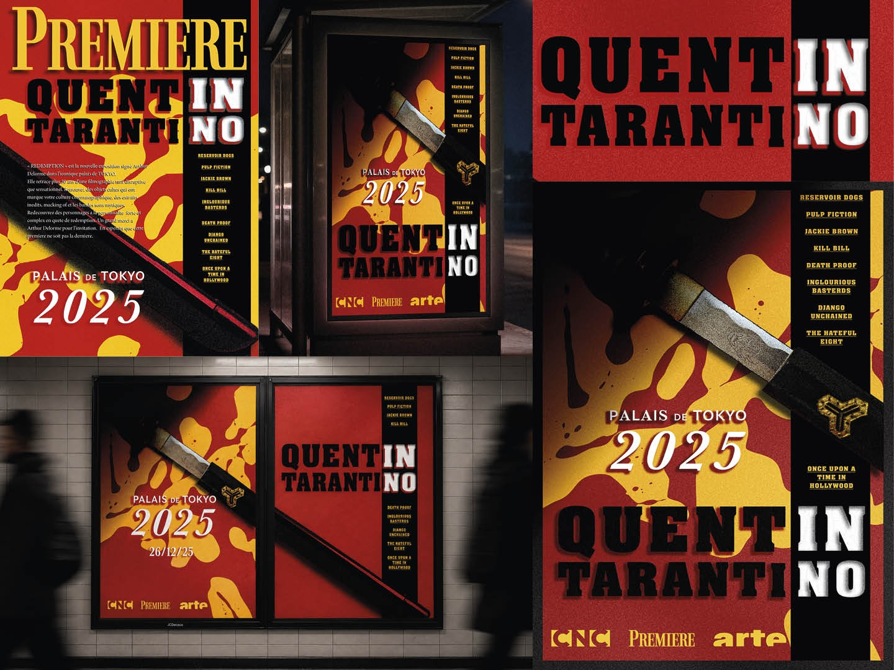

PROJET 04 / 07
Exposition Tarantino
Ce projet explore la direction artistique d’une exposition fictive consacrée à Quentin Tarantino au Palais de Tokyo. L’affiche s’inspire de l’esthétique pulp et grindhouse propre au cinéma du réalisateur.
La composition s’articule autour d’un katana, référence directe à Kill Bill, et d’une palette de couleurs saturées rouge, jaune et noir rappelant l’univers visuel de ses films.
La filmographie du réalisateur est intégrée dans la composition afin de renforcer la dimension rétrospective de l’exposition.
Découvrir les autres projets →